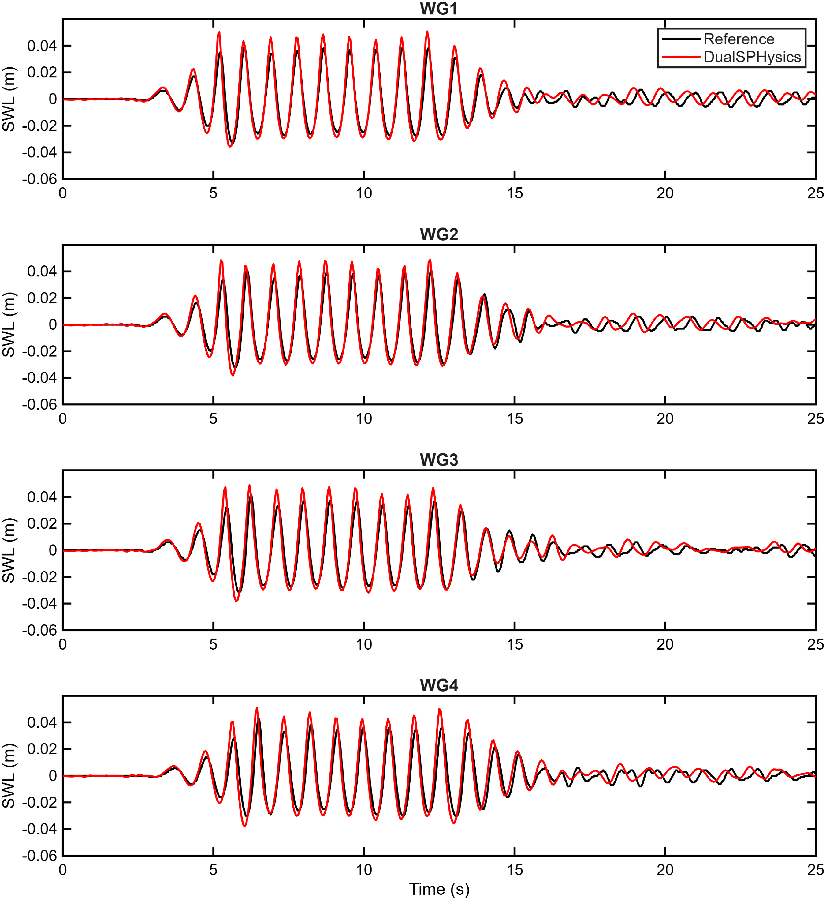
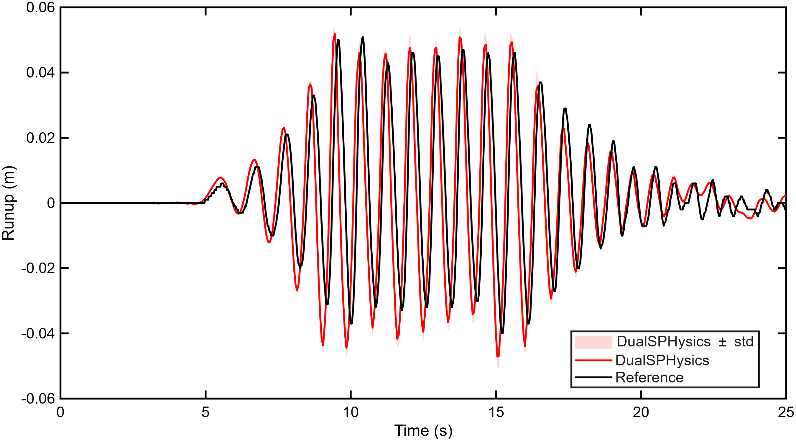

Wave Run-up¶
Under review by Bonaventura Tagliafierro
This example demonstrates a 3-D wave flume in which waves, generated by a piston-type wavemaker, propagate down a channel and shoal onto a sloped breakwater protected by cubic blocks. The piston motion is prescribed from an external file, and the resulting free-surface evolution is monitored upstream and along inclined lines across the width of the slope. The intended comparisons are free-surface elevation at wave gauges and wave run-up on the cubic-block breakwater, associated with Zhang et al. (2018).
The case is supplied at DualSPHysics_v6.0/examples/benchmarks/04_WaveRunup. The XML and BAT remain provisional until the release configuration is frozen. Experimental references and preliminary numerical comparison PNGs are supplied. Their correspondence with the current geometry, datum, gauge mapping and time alignment still requires verification.
What's Covered in This Tutorial
This case demonstrates the following DualSPHysics capabilities:
- Piston-type wavemaker driven by a prescribed motion file (
mvpredef) - STL surface geometry for normals and individually positioned primitive armour blocks
- Combination of parametric primitives and STL geometry in a single case
- Geometry-based normals for mDBC and periodic boundaries in the transverse direction
- Four upstream wave gauges and seven inclined numerical run-up gauges
- A comparison workflow using the supplied experimental wave-flume data
Video: To be updated for the approved benchmark configuration.
All XML blocks below are excerpts copied from WaveRunup_Def.xml, retaining source attributes, expressions, comments and nesting. Separate excerpts are not a complete runnable XML file.
Case Configuration¶
Physical Setup¶
The simulation represents a finite-width, 3-D wave flume with:
- Initial still-water level: \(z=0\); nominal horizontal bottom at \(z=-0.25\) m, giving 0.25 m water depth.
- Transverse width: 0.37 m, from \(y=-0.185\) m to \(y=0.185\) m, with Y periodicity.
- Nominal piston face:
pistonPosition=-5.95m; piston motion is along \(x\). - Breakwater: a nominal 28° slope with individually positioned particle armour blocks and separate STL normal geometry.
- Particle spacing: \(dp=0.37/59\approx0.0062711864\) m. The exact expression is retained in the XML.
Positive \(x\) points from the piston towards the breakwater, \(y\) is transverse and \(z\) is vertical. The coordinates are centred in \(y\); the breakwater toe region lies near \(x=0\). This is a 3-D periodic strip, not a 2-D simulation or a model with solid lateral walls.
Local label mkfluid=0 identifies water, mkbound=10 the piston and mkbound=0 the tank and inclined support. The normal-geometry STL uses mkbound=50; particle armour blocks have individual labels 21–118. These case-definition labels are distinct from generated global MK values.
Geometry Definition¶
Domain Setup¶
This first excerpt from geometry/predefinition sets dimensions, grid resolution and timing:
<!-- Test case -->
<newvarcte DepthReal="0.25" _rem="Water level (experiment)" />
<newvarcte wavePeriod="1.50" waveH="0.12" _rem="Only used for tank size and time out" />
<newvarcte regularWaves="20" />
<newvarcte timeMax="25" />
<newvarcte timeOut="wavePeriod/30" />
<newvarcte ToeDist_X="5.95" _rem="Piston to toe of the slope" />
<newvarcte pistonPosition="-ToeDist_X" />
<newvarcte domainDown="pistonPosition-4*waveH" />
<newvarcte ToeX="0" _rem="Toe of the slope" />
<newvarcte SlopeAngle="28" _rem="in degrees" />
<newvarcte BoxLength="0.058" />
<newvarcte BoxWidth="0.058" />
<newvarcte BoxHeight="0.058" />
<newvar bsx="0.0" />
<newvar bsy="0.0" />
<newvar bsz="0.0" />
<newvarcte domainWidthY="0.37" _rem="Periodic in y" />
<!-- Resolution -->
<newvarcte nY="59" _rem="Particles across the periodic width (74: depth exact)" />
<newvarcte Dp="domainWidthY/nY" />
<newvarcte Dpm="Dp/2" />
waveH=0.12 and wavePeriod=1.50 are sizing/output variables, not a theoretical prescription of the imposed piston signal. ToeDist_X=5.95 places the nominal piston at −5.95 m. nY=59 defines Dp=0.37/59 m across the periodic width.
ToeDist_X=5.95 defines the coordinate offset used in the gauges. The slope-related part of predefinition is:
<!-- Real geometry on grid faces (SWL at z=0, toe at x=0) -->
<newvarcte depth="roundpos(DepthReal,0,Dp)" />
<newvarcte TopZ="roundpos(3*waveH,0,Dp)" />
<newvarcte tankHeight="depth+TopZ" />
<newvarcte PistonX="roundpos(pistonPosition,0,Dp)" />
<newvarcte DownX="roundpos(domainDown,0,Dp)" />
<newvarcte Slopelength="tankHeight*cosdg(SlopeAngle)/sindg(SlopeAngle)" />
<newvarcte domainBeach="ToeX+Slopelength +0.01" />
<newvarcte X1="BoxLength/6" />
<!-- Domain limits -->
<newvarcte PminX="DownX-Dpm-Dp" PminY="-domainWidthY/2+Dpm" PminZ="-depth-Dpm-10*Dp" />
<newvarcte PmaxX="domainBeach+10*Dp" PmaxY="domainWidthY/2-Dpm" PmaxZ="TopZ+10*Dp" />
<newvarcte PosMin_x="PminX" PosMin_y="PminY" PosMin_z="PminZ" />
<!-- Particle positions (first layer) -->
<newvarcte Floorpz="-depth-Dpm" />
<newvarcte Pistonpx2="PistonX-Dpm" Pistonpx1="Pistonpx2-5*Dp" />
<newvarcte Slopepx1="ToeX+Dpm*sindg(SlopeAngle)/(1+cosdg(SlopeAngle))" _rem="Slope particle line Dp/2 below the real slope" />
<newvarcte Slopepx2="Slopepx1+(TopZ-Floorpz)*cosdg(SlopeAngle)/sindg(SlopeAngle)" />
<!-- Slope particles -->
<newvarcte SlopeLen="tankHeight/sindg(SlopeAngle)" _rem="Length of the real slope" />
<newvarcte Slopexl1="Dpm" Slopexl2="roundpos(SlopeLen-Dpm,Slopexl1,Dp)" />
<newvarcte Slopezl1="-Dpm-5*Dp" Slopezl2="-Dpm" _rem="6 layers, first one Dp/2 below the surface" />
DepthReal=0.25 m is the experimental depth; depth=roundpos(DepthReal,0,Dp) evaluates to approximately 0.250847458 m. TopZ=roundpos(3*waveH,0,Dp) is approximately 0.357457627 m, and tankHeight=depth+TopZ is approximately 0.608305085 m. domainBeach=ToeX+Slopelength+0.01 retains the current rounded-grid geometry.
<definition dp="#Dp">
<pointref x="#PminX" y="#PminY" z="#PminZ" />
<pointmin x="#PminX" y="#PminY" z="#PminZ" />
<pointmax x="#PmaxX" y="#PmaxY" z="#PmaxZ" />
</definition>
The generation region has a nonzero Y extent, with particle-grid limits given by Pmin* and Pmax*; its upper Z bound is TopZ+10*Dp, approximately 0.420169492 m. These bounds are distinct from the solver domain.
Piston Wavemaker¶
The piston particle-construction excerpt from geometry/commands/mainlist is:
<setmkbound mk="10" />
<drawbox>
<boxfill>solid</boxfill>
<point x="#Pistonpx1" y="#PminY" z="#Floorpz+Dp" />
<endpoint x="#Pistonpx2" y="#PmaxY" z="#TopZ-Dpm" />
</drawbox>
Boundary marker: mkbound=10 selects the piston. The active main-list draw uses a solid block from Pistonpx1 to Pistonpx2, with particle Y limits PminY and PmaxY; its vertical extent is Floorpz+Dp to TopZ-Dpm. The separate normal surface uses the nominal face PistonX.
Flume Bottom¶
<!-- Tank -->
<setfrdrawmode auto="false" />
<setmkbound mk="0" />
<setnormalinvert invert="false" />
<drawextrude closed="false">
<extrude x="0" y="#domainWidthY" z="0" />
<point x="#DownX" y="#-domainWidthY/2" z="#Floorpz" />
<point x="#Slopepx1+5*Dp" y="#-domainWidthY/2" z="#Floorpz" />
<!-- <point x="#Slopepx2" y="#-domainWidthY/2" z="#TopZ" /> -->
<layers vdp="-0,-1,-2,-3,-4,-5" />
</drawextrude>
<setfrdrawmode auto="true" />
<matrixreset />
<move x="#ToeX" y="0" z="#-depth" />
<rotate ang="#SlopeAngle" x="0" y="1" z="0" />
<drawbox>
<boxfill>solid</boxfill>
<point x="#Slopexl1" y="#PminY" z="#Slopezl1" />
<endpoint x="#Slopexl2" y="#PmaxY" z="#Slopezl2" />
</drawbox>
<matrixreset />
<shapeout file="tank" />
Selective construction: the open extrusion draws the horizontal floor with six layers. A separate rotated solid box draws the inclined support, using Slopexl* and Slopezl* coordinates and rotation SlopeAngle=28 about Y. The commented extrusion point is retained but is not an active inclined surface. No solid lateral walls are required by Y periodicity.
Breakwater Slope and Armour Layer¶
The current GeometryForNormals list imports blocks.stl for the armour normal geometry. Particle blocks are constructed separately with the BlockPart primitive list.
The normal-generating STL import is:
<drawfilestl file="blocks.stl" advanced="true">
<drawrotate angx="0" angy="0" angz="#0" />
<drawmove x="#0" y="0" z="#-depth" />
<depth depthmin="#0" />
</drawfilestl>
The first of the individually positioned particle blocks is shown below:
<!-- Block 1 -->
<matrixreset />
<setmkbound mk="21" />
<setvar bsx="0.058000041" bsy="0.058000030" bsz="0.058000015" />
<move x="0" y="0" z="#-depth" />
<rotate ang="#SlopeAngle" x="0" y="1" z="0" />
<move x="0.094497976" y="-0.075760644" z="0.088081777" />
<rotate ang="-41.017849011" x="-0.000430661" y="0.001019186" z="-0.999999388" />
<runlist name="BlockPart" />
<matrixreset />
STL and particle roles: blocks.stl supplies normal geometry. BlockPart draws each solid particle box on its own lattice from bsx, bsy and bsz; the main list supplies each block's dimensions, marker, translations and rotations. Labels 21–118 identify 98 particle blocks. The first-block excerpt is representative; the remaining placement values are specified individually in the XML.
Positioning: the STL normal import uses zero rotation and translation (0,0,-depth). Particle blocks instead use their individual main-list transformation sequences; those must not be replaced with a single STL rotation or inferred from the normal mesh.
Normal surfaces and discretised particle boundaries serve different purposes. The mesh vertices and the individually transformed particle boxes are not interchangeable or evidence of verified generated-particle positions.
Fluid Body¶
<setmkfluid mk="0" />
<fillbox x="#Pistonpx2+6*Dp" y="#PminY+30*Dp" z="#Floorpz+3*Dp">
<modefill>void</modefill>
<point x="#Pistonpx2" y="#-domainWidthY/2-10*Dp" z="#Floorpz" />
<endpoint x="#domainBeach" y="#domainWidthY/2+10*Dp" z="#0+Dp" />
</fillbox>
Void fill mode: fillbox fills connected available space after the tank, slope and armour particles have been drawn. Its bounds extend from the piston particle reference and Floorpz to domainBeach and Z=0+Dp≈0.0062711864 m. The nominal still-water reference remains Z=0; the drawing endpoint must be considered separately when checking the generated initial surface. There is no active STL void-removal step in the current main list.
Seed point: (Pistonpx2+6*Dp,PminY+30*Dp,Floorpz+3*Dp) lies inside the intended water region; it does not prescribe the still-water elevation.
Boundary Normals¶
mainlist first calls GeometryForNormals, which draws shapes separately from the particle-generation operations. It includes the bottom, piston and blocks.stl, and writes the hdp geometry. The active normals definition is:
<normals active="true">
<norgeometry comment="Define initial configuration of normals before applying other configurations">
<geometryfile file="[CaseName]_hdp_Actual.vtk" comment="File with boundary geometry (VTK format)" />
<distanceh v="2.0" comment="Maximum orthogonal distance (H*value) to compute normals data (default=2)" />
<svshapes v="true" comment="Saves VTK with geometry in triangles and quads with its normals for debug (default=false)" />
</norgeometry>
</normals>
distanceh=2.0 sets the maximum orthogonal search distance in smoothing lengths, and svshapes=true requests geometry with normals for debugging. These settings support mDBC; they do not establish that geometry generation has already been executed.
Wave Generation (Piston Motion)¶
<motion>
<objreal ref="10">
<begin mov="1" start="0.00" finish="40" />
<mvpredef id="1" duration="15">
<file name="Mov_piston.dat" fields="2" fieldtime="0" fieldx="1" />
</mvpredef>
</objreal>
</motion>
Reference object: objreal ref="10" applies the prescribed motion to the piston boundary only.
Predefined motion: mvpredef reads the horizontal position history from Mov_piston.dat. fields=2, fieldtime=0 and fieldx=1 select the first column as motion time and the second as horizontal position, using the case's seconds/metres convention. The motion loader reads those values directly, and the motion implementation applies changes in the supplied position; it does not interpret the second column as velocity or as a global replacement for the piston's initial \(x=-5.95\) m geometry.
The file contains 626 numeric rows, with time values from 0 to 15.6 and no header. The XML starts movement 1 at 0.00 s, sets its block duration to 15 s, and gives the enclosing begin a finish value of 40 s. These are distinct controls: the finish value does not turn the 15 s motion block into a 30 s forcing record. The current simulation duration is 25 s. The resulting wave conditions must be assessed from the prescribed forcing and numerical measurements; the nominal sizing variables are not a substitute for that assessment.
Numerical Gauges¶
The solver computes eleven SWL gauges from fluid particles: four vertical wave-gauge scans upstream and seven inclined scans through the breakwater region. These are XML-defined solver gauges, not a MeasureTool post-processing stage.
Default Settings¶
The following separate extracts from execution/special/gauges/default show its active settings:
output=true enables measurement CSV files, while savevtkpart=0 disables per-PART gauge-result VTK files. With no active timing overrides, the implementation uses the simulation interval and TimeOut=0.05 s for both computation and CSV output timing: a nominal 20 Hz schedule. Actual sample timestamps must be checked in the generated files; measurements are evaluated at available solver steps.
Every gauge sets pointdp=0.02*Dp, approximately 0.0001254237 m as the requested scan-point spacing. The implementation adjusts the subdivision to fit each complete line. This is a sampling increment, not the fluid-particle spacing or a guarantee of surface accuracy.
Wave Gauges WG1–WG4¶
The wave-gauge excerpt is:
<swl name="WG1">
<pointdp coefdp="0.02" comment="Distance between check points (value=coefdp*dp)" />
<point0 x="#-ToeDist_X+3.10" y="0" z="#-depth+4*Dp" comment="Initial point" units_comment="m" />
<point2 x="#-ToeDist_X+3.10" y="0" z="#3*waveH" comment="Final point" units_comment="m" />
</swl>
<swl name="WG2">
<pointdp coefdp="0.02" comment="Distance between check points (value=coefdp*dp)" />
<point0 x="#-ToeDist_X+3.20" y="0" z="#-depth+4*Dp" comment="Initial point" units_comment="m" />
<point2 x="#-ToeDist_X+3.20" y="0" z="#3*waveH" comment="Final point" units_comment="m" />
</swl>
<swl name="WG3">
<pointdp coefdp="0.02" comment="Distance between check points (value=coefdp*dp)" />
<point0 x="#-ToeDist_X+3.34" y="0" z="#-depth+4*Dp" comment="Initial point" units_comment="m" />
<point2 x="#-ToeDist_X+3.34" y="0" z="#3*waveH" comment="Final point" units_comment="m" />
</swl>
<swl name="WG4">
<pointdp coefdp="0.02" comment="Distance between check points (value=coefdp*dp)" />
<point0 x="#-ToeDist_X+3.63" y="0" z="#-depth+4*Dp" comment="Initial point" units_comment="m" />
<point2 x="#-ToeDist_X+3.63" y="0" z="#3*waveH" comment="Final point" units_comment="m" />
</swl>
| Gauge | \(x\) (m) | \(y\) (m) | Vertical scan \(z\) (m) |
|---|---|---|---|
| WG1 | −2.85 | 0 | approximately −0.225763 to 0.36 |
| WG2 | −2.75 | 0 | approximately −0.225763 to 0.36 |
| WG3 | −2.61 | 0 | approximately −0.225763 to 0.36 |
| WG4 | −2.32 | 0 | approximately −0.225763 to 0.36 |
The X coordinates follow -ToeDist_X plus the offsets shown. The lower vertical endpoint is -depth+4*Dp≈−0.225763 m; the upper endpoint is 3*waveH=0.36 m. Experimental channel locations must still be verified against these numerical scans.
Run-up Gauges¶
<swl name="Runup1">
<pointdp coefdp="0.02" comment="Distance between check points (value=coefdp*Dp)" />
<point0 x="#-ToeDist_X+5.72" y="#-domainWidthY/2+0.04" z="#-depth+0.04" comment="Initial point" units_comment="m" />
<point2 x="#-ToeDist_X+6.81" y="#-domainWidthY/2+0.04" z="#-depth+0.62" comment="Final point" units_comment="m" />
</swl>
<swl name="Runup2">
<pointdp coefdp="0.02" comment="Distance between check points (value=coefdp*Dp)" />
<point0 x="#-ToeDist_X+5.72" y="#-domainWidthY/2+0.08" z="#-depth+0.04" comment="Initial point" units_comment="m" />
<point2 x="#-ToeDist_X+6.81" y="#-domainWidthY/2+0.08" z="#-depth+0.62" comment="Final point" units_comment="m" />
</swl>
<swl name="Runup3">
<pointdp coefdp="0.02" comment="Distance between check points (value=coefdp*Dp)" />
<point0 x="#-ToeDist_X+5.72" y="#-domainWidthY/2+0.12" z="#-depth+0.04" comment="Initial point" units_comment="m" />
<point2 x="#-ToeDist_X+6.81" y="#-domainWidthY/2+0.12" z="#-depth+0.62" comment="Final point" units_comment="m" />
</swl>
<swl name="Runup4">
<pointdp coefdp="0.02" comment="Distance between check points (value=coefdp*Dp)" />
<point0 x="#-ToeDist_X+5.72" y="#0" z="#-depth+0.04" comment="Initial point" units_comment="m" />
<point2 x="#-ToeDist_X+6.81" y="#0" z="#-depth+0.62" comment="Final point" units_comment="m" />
</swl>
<swl name="Runup5">
<pointdp coefdp="0.02" comment="Distance between check points (value=coefdp*Dp)" />
<point0 x="#-ToeDist_X+5.72" y="#domainWidthY/2-0.12" z="#-depth+0.04" comment="Initial point" units_comment="m" />
<point2 x="#-ToeDist_X+6.81" y="#domainWidthY/2-0.12" z="#-depth+0.62" comment="Final point" units_comment="m" />
</swl>
<swl name="Runup6">
<pointdp coefdp="0.02" comment="Distance between check points (value=coefdp*Dp)" />
<point0 x="#-ToeDist_X+5.72" y="#domainWidthY/2-0.08" z="#-depth+0.04" comment="Initial point" units_comment="m" />
<point2 x="#-ToeDist_X+6.81" y="#domainWidthY/2-0.08" z="#-depth+0.62" comment="Final point" units_comment="m" />
</swl>
<swl name="Runup7">
<pointdp coefdp="0.02" comment="Distance between check points (value=coefdp*Dp)" />
<point0 x="#-ToeDist_X+5.72" y="#domainWidthY/2-0.04" z="#-depth+0.04" comment="Initial point" units_comment="m" />
<point2 x="#-ToeDist_X+6.81" y="#domainWidthY/2-0.04" z="#-depth+0.62" comment="Final point" units_comment="m" />
</swl>
All seven scans run from \((x,z)=(-0.23,-0.21)\) m to \((0.86,0.369153)\) m, with the following constant Y coordinates:
| Numerical gauge | \(y\) (m) |
|---|---|
| Runup1 | −0.145 |
| Runup2 | −0.105 |
| Runup3 | −0.065 |
| Runup4 | 0 |
| Runup5 | 0.065 |
| Runup6 | 0.105 |
| Runup7 | 0.145 |
Inclined scans: both \(x\) and \(z\) change along each line. They sample the fluid-to-empty transition along the inclined breakwater region at different transverse positions; they are not seven independent vertical wave gauges. The solver records the detected intersection coordinates swlx, swly and swlz, together with the line endpoints. It does not directly label the result as vertical run-up above still water, distance along the slope or normalised run-up. The required datum and reduction must be established before comparing with the experiment.
Expected Gauge Outputs¶
JGaugeItem names CSV files using the gauge type SWL and the exact XML label. The expected root-output files are:
WaveRunup_out/GaugesSWL_WG1.csvthroughGaugesSWL_WG4.csv.WaveRunup_out/GaugesSWL_Runup1.csvthroughGaugesSWL_Runup7.csv.
The implementation's data headers are shown below with semicolons; the actual separator follows the executable's CSV configuration:
These filenames follow the configured gauges; existing records require comparison with the current scan definitions. Numerical coordinates have an explicit metre datum in the case coordinate system; the supplied experimental headers do not establish an equivalent datum.
Numerical Parameters¶
Boundary Treatment, Kernel and Viscosity¶
<constantsdef>
<gravity x="0" y="0" z="-9.81" comment="Gravitational acceleration" units_comment="m/s^2" />
<rhop0 value="999" comment="Reference density of the fluid" units_comment="kg/m^3" />
<rhopgradient value="3" comment="Initial density gradient 1:Rhop0, 2:Water column, 3:Max. water height (default=2)" />
<hswl value="0" auto="true" comment="Maximum still water level to calculate speedofsound using coefsound" units_comment="metres (m)" />
<gamma value="7" comment="Polytropic constant for water used in the state equation" />
<speedsystem value="0" auto="true" comment="Maximum system speed (by default the dam-break propagation is used)" />
<coefsound value="20" comment="Coefficient to multiply speedsystem" />
<speedsound value="0" auto="true" comment="Speed of sound to use in the simulation (by default speedofsound=coefsound*speedsystem)" />
<coefh value="1.3" comment="Coefficient to calculate the smoothing length (h=coefh*sqrt(3*dp^2) in 3D)" />
<cflnumber value="0.2" comment="Coefficient to multiply dt" />
</constantsdef>
Gravity is \((0,0,-9.81)\) m/s², reference density is 999 kg/m³, the smoothing-length coefficient is 1.3 and the CFL coefficient is 0.2. The sound speed retains its automatic calculation with coefsound=20.
<parameter key="Boundary" value="mDBC" comment="Boundary method: DBC, mDBC, MIX:MixBC (default=DBC)" />
<parameter key="SlipMode" value="FS" comment="Slip mode for mDBC: NS:No-slip, FS:Free slip, V0:TanVel=0, M22:mDBC 2022 (default=NS)" />
<parameter key="NoPenetration" value="Y" comment="Activate No-Penetration option for mDBC: Y/N (default=N)" />
<parameter key="StepAlgorithm" value="SYM" comment="Step Algorithm: SYM:Symplectic, VER:Verlet (default=SYM)" />
<parameter key="VerletSteps" value="40" comment="Verlet only: Number of steps to apply Euler timestepping (default=40)" />
<parameter key="Kernel" value="WC2" comment="Interaction Kernel: WC2:WendlandC2, WC6:WendlandC6 (default=WC2)" />
<parameter key="ViscoTreatment" value="LAM" comment="Viscosity formulation: LAM:Laminar, ART:Artificial (default=LAM)" />
<parameter key="Visco" value="1e-06" comment="Viscosity value. Typically 0.01 for Artificial and 1e-6 m^2/s (water kinematic viscosity) for Laminar" />
<parameter key="ViscoBoundFactor" value="1" comment="Multiply viscosity value with boundary (default=1)" />
<parameter key="Turbulence" value="SPS" comment="Turbulence model: NO:None, SPS:Sub-particle scale (default=NO)" />
The case explicitly selects mDBC, free-slip (FS) and NoPenetration=Y. SYM selects symplectic integration; the present VerletSteps=40 applies only to Verlet. The kernel is Wendland C2 (WC2). These are the selected case settings, not claims about universal executable defaults.
ViscoTreatment=LAM, Visco=1e-06 and ViscoBoundFactor=1 configure laminar kinematic viscosity \(10^{-6}\) m²/s with its boundary multiplier. Turbulence=SPS adds the sub-particle-scale turbulence model.
Density Diffusion and Shifting¶
<parameter key="DensityDT" value="FO" comment="Density Diffusion Term: NO:None, FO:Fourtakas (default=NO)" />
<parameter key="DensityDTvalue" value="0.10" comment="DDT value (default=0.1)" />
<parameter key="DivCleanKp" value="0" comment="Kappa parameter for Divergence Cleaning (equal to coefsound) (default=0)" />
<parameter key="Shifting" value="1" comment="Shifting mode 0:None, 1:Ignore bound, 2:Ignore fixed, 3:Full, 4:Full advanced (default=0)" />
<parameter key="ShiftCoef" value="-0.2" comment="Coefficient for standard shifting computation (default=-2)" />
<parameter key="ShiftTFS" value="2.75" comment="Threshold to detect free surface. Typically 1.5 for 2D and 2.75 for 3D (default=0)" />
<parameter key="ShiftAdvCoef" value="-0.01" comment="Coefficient for advanced shifting computation (default=-0.01)" />
<parameter key="ShiftAdvALE" value="N" comment="ALE formulation for advanced shifting: Y/N (default=N)" />
<parameter key="ShiftAdvNCPress" value="Y" comment="Non conservative pressure formulation for advanced shifting: Y/N (default=N)" />
Fourtakas density diffusion (FO) uses coefficient 0.10; see Fourtakas et al. (2019). DivCleanKp=0 disables divergence cleaning; the alternative inside an XML comment is inactive.
Standard particle shifting is active with mode 1 (Ignore bound), ShiftCoef=-0.2 and free-surface threshold ShiftTFS=2.75. The case-specific coefficient −0.2 is retained. The listed ShiftAdvCoef, ShiftAdvALE and ShiftAdvNCPress settings belong to advanced mode 4 and are not active for the selected standard mode. No floating body is defined by the piston, fixed tank and block labels.
Simulation Domain¶
<parameter key="YPeriodicIncZ" value="0.0" comment="Increase of Z with periodic BC in axis Y" units_comment="metres (m)" />
The presence of YPeriodicIncZ enables Y periodicity even though its value is zero: crossing the periodic Y boundary introduces no additional Z offset. The finite-width particle configuration remains 3-D.
<simulationdomain comment="Defines domain of simulation (default=Uses minimum and maximum position of the generated particles)">
<posmin x="default" y="default" z="default" comment="e.g.: x=0.5, y=default-1, z=default-10%" />
<posmax x="default" y="default" z="default + 5%" />
</simulationdomain>
The solver takes the generated-particle extents as its default domain and extends the maximum Z bound by the configured 5%. These particle-based bounds differ from the generation-region limits and the input STL vertices.
Simulation Time¶
<parameter key="TimeMax" value="#timeMax" comment="Time of simulation" units_comment="seconds" />
<parameter key="TimeOut" value="#timeOut" comment="Time out data" units_comment="seconds" />
<parameter key="TimeOutExtra" value="0.05" />
timeMax=25 s and timeOut=wavePeriod/30=0.05 s. regularWaves=20 does not set the current duration expression. Default gauge timing follows the 0.05 s interval; TimeOutExtra=0.05 is separate. DtIni=#2*Dp/1500 is retained, with fixed stepping disabled.
Simulation time, the prescribed-motion file time, numerical gauge timestamps and experimental Time values must be kept distinct. Their origins and usable comparison interval must be checked before combining signals.
Running the Simulation¶
Windows GPU¶
The supplied script is wWaveRunup_win64_GPU.bat, intended to run from the benchmark directory. Its relevant definitions are:
set dirbin=../../../bin/windows
set gencase="%dirbin%/GenCase_win64.exe"
set dualsphysicscpu="%dirbin%/DualSPHysics6.0CPU_win64.exe"
set dualsphysicsgpu="%dirbin%/DualSPHysics6.0_win64.exe"
set boundaryvtk="%dirbin%/BoundaryVTK_win64.exe"
The active preprocessing and simulation calls are:
rem Executes GenCase to create initial files for simulation.
%gencase% %name%_Def %dirout%/%name% -save:all
if not "%ERRORLEVEL%" == "0" goto fail
rem Executes DualSPHysics to run the SPH simulation.
%dualsphysicsgpu% -gpu %dirout%/%name% %dirout%
if not "%ERRORLEVEL%" == "0" goto fail
The active post-processing calls are:
:postprocessing
rem Executes PartVTK to create VTK files with fluid particles.
set dirout2=%dirout%\particles
%partvtk% -dirdata %diroutdata% -savevtk %dirout2%/PartFluid -onlytype:-all,+fluid -continue:1
if not "%ERRORLEVEL%" == "0" goto fail
rem Executes PartVTKOut to create VTK files with excluded particles.
%partvtkout% -dirdata %diroutdata% -savevtk %dirout2%/PartFluidOut -SaveResume %dirout2%/_ResumeFluidOut
if not "%ERRORLEVEL%" == "0" goto fail
PartVTK exports fluid particles and PartVTKOut exports excluded particles and their summary. The current BAT does not invoke BoundaryVTK; its executable assignment alone does not activate a tool.
The active sequence is GenCase → GPU solver → PartVTK → PartVTKOut, with a return-code check after every active call. XML gauges are written by the solver. No BoundaryVTK or MeasureTool stage is active; IsoSurface remains commented out.
| Expected path relative to the benchmark directory | Role |
|---|---|
WaveRunup_out/ |
Generated case, solver diagnostics and enabled gauge CSVs |
WaveRunup_out/data/ |
Particle and motion data used by the tools |
WaveRunup_out/particles/PartFluid, PartFluidOut, _ResumeFluidOut |
Fluid VTK and excluded-particle output prefixes |
Existing WaveRunup_out/ metadata records a 30 s run, while the current definition selects 25 s. The updated figures display 0–25 s; restricting the displayed interval does not establish that they are verified results of the exact current configuration. Geometry and probe correspondence also remain to be checked.
Required input files
Keep Mov_piston.dat and blocks.stl in the case directory. The former supplies piston motion and the latter normal geometry; particle-block placements are defined separately in the XML.
Final Release Scripts¶
The release plan includes Windows GPU and CPU BAT files and Linux GPU and CPU SH files. Only the currently supplied Windows GPU BAT has been verified statically for this benchmark. Final filenames and contents of the remaining scripts will be checked after the source configuration is frozen.
Results and Validation¶
Qualitative Behaviour¶
The physical problem concerns wave propagation towards a sloped cubic-block breakwater and the resulting free-surface excursion. Preliminary comparison PNGs are available, but their configuration correspondence and physical validation remain pending.
Experimental References¶
| Supplied file | Exact CSV header | Available series |
|---|---|---|
reference/WG1_4.csv |
Time,WG4,WG3,WG2,WG1 |
Four experimental wave-gauge channels, in WG4-to-WG1 order |
reference/Runup.csv |
Time,Gauge_1 |
One experimental run-up channel |
Each file has 2,200 observations. The Time columns begin at −9.425 and −9.44, respectively. Their headers do not declare units, a vertical datum or experimental gauge coordinates. The original channel order and time values must be preserved; no arbitrary time-origin shift, level subtraction or unit inference is applied.
Wave-gauge Validation¶

Preliminary figure. The numerical results and their comparison with the reference data are pending final verification.
The intended comparison uses the four numerical SWL records and the correspondingly labelled experimental channels. Experimental coordinates, units, datum and time alignment must be confirmed before those channels are treated as matched measurements. No numerical agreement has yet been established.
Run-up Validation¶

Preliminary figure. The numerical results and their comparison with the reference data are pending final verification.
The seven numerical inclined lines resolve different transverse positions. The supplied experiment contains only Gauge_1; its correspondence with a particular line or a reduction across lines remains under review. A scientifically defined run-up datum/convention and time alignment are needed before reducing the recorded intersection coordinates and comparing them. No seven-channel experimental dataset, normalised quantity or validated run-up prediction is assumed.
References¶
◆ Zhang, F., Crespo, A. J. C., Altomare, C., Domínguez, J. M., Marzeddu, A., Shang, S., & Gómez-Gesteira, M. (2018). DualSPHysics: a numerical tool to simulate real breakwaters. Journal of Hydrodynamics, 30(1), 95–105. https://doi.org/10.1007/s42241-018-0010-0
◆ Fourtakas, G., Domínguez, J. M., Vacondio, R., & Rogers, B. D. (2019). Local Uniform Stencil (LUST) boundary condition for arbitrary 3-D boundaries in parallel smoothed particle hydrodynamics (SPH) models. Computers & Fluids, 190, 346–361. https://doi.org/10.1016/j.compfluid.2019.06.009